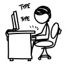
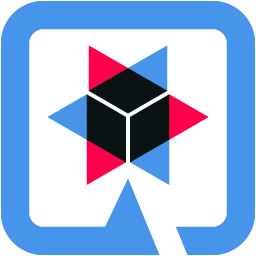
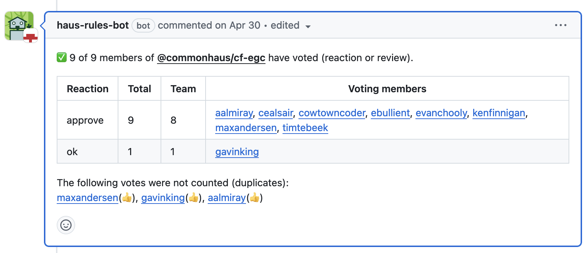
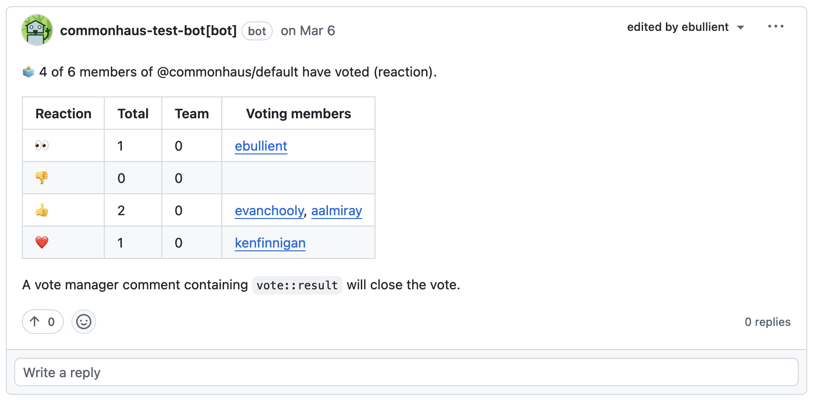
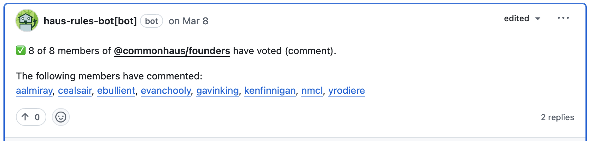
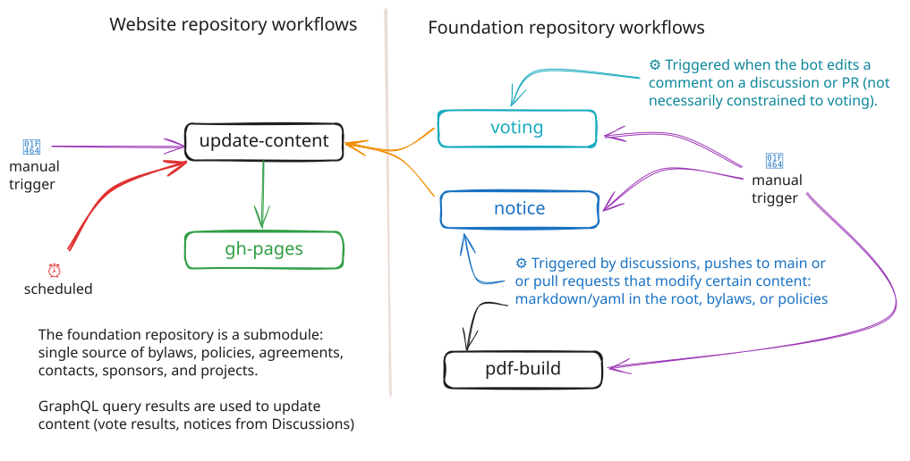

<!DOCTYPE html>
<html lang="en">
<head>
    <meta charset="utf-8" />
    <meta name="viewport" content="width=device-width, initial-scale=1.0, maximum-scale=1.0, user-scalable=no" />

    <title></title>
    <link rel="stylesheet" href="../reveal-5.2.0/dist/reset.css">
    <link rel="stylesheet" href="../reveal-5.2.0/dist/reveal.css" />
    <link rel="stylesheet" href="../reveal-5.2.0/css/slides-extended.css" />
    <link rel="stylesheet" href="assets/css/ebw-2024.css" id="theme" />
    <link rel="stylesheet" href="assets/css/github.highlight.css" />
    <link rel="stylesheet" href="../reveal-5.2.0/plugin/customcontrols/style.css">


    <link rel="stylesheet" href="assets/css/ebullient-talk.css" />

    <script defer src="../reveal-5.2.0/dist/fontawesome/all.min.js"></script>

    <script type="text/javascript">
        function pageInIframe() {
            return (window.location !== window.parent.location);
        }

        let forgetPop = true;
        function onPopState(event) {
            if(forgetPop){
                forgetPop = false;
            } else if( pageInIframe()) {
                parent.postMessage(event.target.location.href, "app://obsidian.md");
            }
        }
        window.onpopstate = onPopState;
        window.onmessage = event => {
            if(event.data == "reload"){
                window.document.location.reload();
            }
            forgetPop = true;
        }

        function fitElements() {
            const itemsToFit = document.getElementsByClassName('fitText');
            for (const item in itemsToFit) {
                if (Object.hasOwnProperty.call(itemsToFit, item)) {
                    const element = itemsToFit[item];
                    fitElement(element, 1, 1000);
                    element.classList.remove('fitText');
                }
            }
        }

        function fitElement(element, start, end) {

            let size = (end + start) / 2;
            element.style.fontSize = `${size}px`;

            if (Math.abs(start - end) < 1) {
                while (element.scrollHeight > element.offsetHeight) {
                    size--;
                    element.style.fontSize = `${size}px`;
                }
                return;
            }

            if (element.scrollHeight > element.offsetHeight) {
                fitElement(element, start, size);
            } else {
                fitElement(element, size, end);
            }
        }

        document.onreadystatechange = () => {
            fitElements();
            if (document.readyState === 'complete') {
                if (pageInIframe() && window.location.href.indexOf("?export") != -1){
                    parent.postMessage(event.target.location.href, "app://obsidian.md");
                }
                if (window.location.href.indexOf("print-pdf") != -1){
                    let stateCheck = setInterval(() => {
                        clearInterval(stateCheck);
                        window.print();
                    }, 250);
                }
            }
        };
    </script>
</head>

<body>
    <div class="reveal">
        <div class="slides"><section  data-markdown><script type="text/template"><!-- .slide: class="drop" template="" -->
<div class="" style="position: absolute; left: 0px; top: 0px; height: 700px; width: 960px; min-height: 700px; display: flex; flex-direction: column; align-items: center; justify-content: center" absolute="true">

### Streamlining OSS Foundation Operations

#### with Quarkus and GitHub Actions




<span class="footer">Erin Schnabel  
[github.com/ebullient](https://github.com/ebullient) ・ [www.ebullient.dev](https://www.ebullient.dev/)・ [www.commonhaus.org](https://www.commonhaus.org/)</span>
</div></script></section><section  data-markdown><script type="text/template"><!-- .slide: class="fade-max left drop" data-background-image="assets/img/profile/erin-devoxx-2022-tall.jpg" template="" -->
<div class="" style="position: absolute; left: 0px; top: 0px; height: 700px; width: 960px; min-height: 700px; display: flex; flex-direction: column; align-items: center; justify-content: center" absolute="true">

### A little bit about me

- Developer of things at Red Hat
- IBMer for 21 years
- Java Champion
- Distinguished Engineer
- Dungeon/Game Master
- **I build ridiculous things**
</div></script></section><section  data-markdown><script type="text/template"><!-- .slide: class="drop" template="" -->
<div class="" style="position: absolute; left: 0px; top: 0px; height: 700px; width: 960px; min-height: 700px; display: flex; flex-direction: column; align-items: center; justify-content: center" absolute="true">


*Crazy idea* ... create a **new non-profit OSS foundation**

<span>that satisfies legal requirements</span><!-- .element: class="fragment" -->  
<span>and addresses continuity concerns</span><!-- .element: class="fragment" -->  
<span>with minimal overhead</span><!-- .element: class="fragment" -->  
<span>and as little disruption as possible</span><!-- .element: class="fragment" -->  
for established projects
</div></script></section><section  data-markdown><script type="text/template"><!-- .slide: class="drop" template="" -->
<div class="" style="position: absolute; left: 0px; top: 0px; height: 700px; width: 960px; min-height: 700px; display: flex; flex-direction: column; align-items: center; justify-content: center" absolute="true">

### Some unofficial goals

- *Minimal overhead*
    - "Minimum viable governance"
    - Impose as little as legally possible
- *Volunteer-driven*
    - Avoid reliance on "deep pockets"
    - Avoid tedious administrivia
</div></script></section><section  data-markdown><script type="text/template"><!-- .slide: class="drop" template="" -->
<div class="" style="position: absolute; left: 0px; top: 0px; height: 700px; width: 960px; min-height: 700px; display: flex; flex-direction: column; align-items: center; justify-content: center" absolute="true">

### Fun bits about non-profit law

State laws are the default
- Board of Directors
- Articles of Incorporation
- Bylaws

<div class="block">

*Jurisdiction: Florida*
</div>

<!-- .element: class="small-text" -->

*"Unless the articles of incorporation or the bylaws provide otherwise..."*<!-- .element: class="footer" -->
</div></script></section><section  data-markdown><script type="text/template"><!-- .slide: class="drop" template="" -->
<div class="" style="position: absolute; left: 0px; top: 0px; height: 700px; width: 960px; min-height: 700px; display: flex; flex-direction: column; align-items: center; justify-content: center" absolute="true">

### Quorum

**Quorum**  
minimum number of people present  
to make *valid* decisions

<div class="block">

**Florida Law**: *valid* meeting

- A majority of the board must be present
- Decisions made by a *majority vote of those present*
</div>

<!-- .element: class="small-text" -->

<span class="footer">How do we meet this requirement *without meetings*?</span>
</div></script></section><section  data-markdown><script type="text/template"><!-- .slide: class="drop" template="" -->
<div class="" style="position: absolute; left: 0px; top: 0px; height: 700px; width: 960px; min-height: 700px; display: flex; flex-direction: column; align-items: center; justify-content: center" absolute="true">

### Notice and Record Keeping

- **Notice**: Directors notified before meetings (2 days).

- **Records**: Keep minutes for meetings and decisions.
</div></script></section><section  data-markdown><script type="text/template"><!-- .slide: class="drop" template="" -->
<div class="" style="position: absolute; left: 0px; top: 0px; height: 700px; width: 960px; min-height: 700px; display: flex; flex-direction: column; align-items: center; justify-content: center" absolute="true">

### Electronic participation

**Florida Law** allows for  
action by directors without a meeting:

- *All members must agree in writing.*
- Signed consents describe the action taken.

<span class="footer">Can electronic participation be more like regular meetings with quorum rules?</span>
</div></script></section><section  data-markdown><script type="text/template"><!-- .slide: class="drop" template="" -->
<div class="" style="position: absolute; left: 0px; top: 0px; height: 700px; width: 960px; min-height: 700px; display: flex; flex-direction: column; align-items: center; justify-content: center" absolute="true">

### Defining our own process

**Goals**

- Asynchronous, electronic participation  
- Satisfy record-keeping requirements.
- *Low-effort participation*: read, react, move on
- *Low/no toil*: no mailing lists; no manual counting
</div></script></section><section  data-markdown><script type="text/template"><!-- .slide: class="drop" template="" -->
<div class="" style="position: absolute; left: 0px; top: 0px; height: 700px; width: 960px; min-height: 700px; display: flex; flex-direction: column; align-items: center; justify-content: center" absolute="true">

### Meetings and Consensus

- **Robert's Rules of Order**
    - Procedural: "I move to... ", "I second... "
    - Show of hands or roll call
    - Assumes synchronous behavior

- **Lazy Consensus (ASF)**: "Silence equals consent"
    - Must wait for objections (days)
    - Did we reach quorum or not?

<span class="footer">Hard to align these approaches with our goals.</span>
</div></script></section><section  data-markdown><script type="text/template"><!-- .slide: class="drop" template="" -->
<div class="" style="position: absolute; left: 0px; top: 0px; height: 700px; width: 960px; min-height: 700px; display: flex; flex-direction: column; align-items: center; justify-content: center" absolute="true">

### Martha's Rules of Order

- Consensus-based decision-making framework.
- Developed by a cooperative housing group in Madison, Wisconsin.
- Originally designed for in-person meetings.
- 🧠✨ Bridge between *lazy consensus* and *recorded quorum*
</div></script></section><section  data-markdown><script type="text/template"><!-- .slide: class="drop" template="" -->
<div class="" style="position: absolute; left: 0px; top: 0px; height: 700px; width: 960px; min-height: 700px; display: flex; flex-direction: column; align-items: center; justify-content: center" absolute="true">

### Martha's Rules (adapted)

1. **Form Proposals** (like lazy consensus).

2. **Sense Vote**: A non-binding vote to gauge sentiment:
    - Like it
    - Can live with it
    - Uncomfortable with it

3. **Final Vote**: *If concerns remain unresolved*:
    - Meet to discuss the proposal and concerns.
    - Vote on whether to proceed or revisit.
</div></script></section><section  data-markdown><script type="text/template"><!-- .slide: class="drop" template="" -->
<div class="" style="position: absolute; left: 0px; top: 0px; height: 700px; width: 960px; min-height: 700px; display: flex; flex-direction: column; align-items: center; justify-content: center" absolute="true">

### How It Works

- **Proposals**: GitHub Issues, Discussions, or Pull Requests.

- **Voting**:
    - *React* to Issues or Discussions.
    - *Review* or *React* to Pull Requests.
    - Use reactions: 👍 (approve), 👀 (ok), 👎 (revise).

- **Bot Actions**: Tracks votes, calculates quorum, closes the vote.

<span class="footer">*Simple, efficient, and low-effort decision-making.*</span>
</div></script></section><section  data-markdown><script type="text/template"><!-- .slide: class="drop" template="" -->
<div class="" style="position: absolute; left: 0px; top: 0px; height: 700px; width: 960px; min-height: 700px; display: flex; flex-direction: column; align-items: center; justify-content: center" absolute="true">

### Automating with GitHub Apps

<div class="" style="z-index: 0; position: absolute; left: 85%; top: 30%; height: 10%; width: 10%; display: flex; flex-direction: column; align-items: center; justify-content: center" >



</div>

- **Why Quarkus?** 
    - Fast startup, efficient runtime.
    - Native mode: perfect for cheap VPS.

- **Key Extensions**:
    - *quarkus-github-app*: GitHub API integration.
    - *quarkus-mailer*: Send notifications.
    - *quarkus-qute*: Templating engine.
    - *quarkus-scheduler*: Periodic tasks.
</div></script></section><section  data-markdown><script type="text/template"><!-- .slide: class="drop" template="" -->
<div class="" style="position: absolute; left: 0px; top: 0px; height: 700px; width: 960px; min-height: 700px; display: flex; flex-direction: column; align-items: center; justify-content: center" absolute="true">

*Let's see what this looks like..*

<split even>


</split>
</div></script></section><section  data-markdown><script type="text/template"><!-- .slide: class="drop" template="" -->
<div class="" style="position: absolute; left: 0px; top: 0px; height: 700px; width: 960px; min-height: 700px; display: flex; flex-direction: column; align-items: center; justify-content: center" absolute="true">

### Vote counting: `marthas`

- Group votes (approve, ok, revise)
- Count votes of the required team

```html
<!--vote::marthas approve="+1" ok="eyes" revise="-1" -->
<!--vote::marthas approve="hooray" ok="eyes" revise="confused" -->
```




<div class="" style="z-index: 0; position: absolute; left: 83%; top: 2%; height: 15%; width: 15%; display: flex; flex-direction: column; align-items: center; justify-content: center" >


</div>
</div></script></section><section  data-markdown><script type="text/template"><!-- .slide: class="drop" template="" -->
<div class="" style="position: absolute; left: 0px; top: 0px; height: 700px; width: 960px; min-height: 700px; display: flex; flex-direction: column; align-items: center; justify-content: center" absolute="true">

### Vote counting: `manual`

- Count reactions of the required team
- Group votes by reaction

```html
<!--vote::manual -->
```




<div class="" style="z-index: 0; position: absolute; left: 83%; top: 2%; height: 15%; width: 15%; display: flex; flex-direction: column; align-items: center; justify-content: center" >


</div>
</div></script></section><section  data-markdown><script type="text/template"><!-- .slide: class="drop" template="" -->
<div class="" style="position: absolute; left: 0px; top: 0px; height: 700px; width: 960px; min-height: 700px; display: flex; flex-direction: column; align-items: center; justify-content: center" absolute="true">

### Vote counting: `manual comments`

Count comments by members of the required team

```html
<!--vote::manual comments -->
```




<div class="" style="z-index: 0; position: absolute; left: 83%; top: 2%; height: 15%; width: 15%; display: flex; flex-direction: column; align-items: center; justify-content: center" >


</div>
</div></script></section><section  data-markdown><script type="text/template"><!-- .slide: class="drop" template="" -->
<div class="" style="position: absolute; left: 0px; top: 0px; height: 700px; width: 960px; min-height: 700px; display: flex; flex-direction: column; align-items: center; justify-content: center" absolute="true">

### Vote progress stored in comment

- Insert link to bot comment in description
- Hidden HTML comment includes gory JSON details

```markdown
✅ 9 of 9 members of @commonhaus/cf-egc have voted (reaction or review).

| Reaction | Total | Team | Voting members |
| --- | --- | --- | --- |
| approve | 9 | 8 | [aalmiray](https://github.com/aalmiray), ... |
| ok | 1 | 1 | [gavinking](https://github.com/gavinking) |   

<!-- vote::data {"voteType":"marthas","hasQuorum":true,
"group":"commonhaus/cf-egc","groupSize":9,"groupVotes":9,
"countedVotes":10,"droppedVotes":3,"votingThreshold":"all",...} -->
```

<div class="" style="z-index: 0; position: absolute; left: 83%; top: 2%; height: 15%; width: 15%; display: flex; flex-direction: column; align-items: center; justify-content: center" >


</div>
</div></script></section><section  data-markdown><script type="text/template"><!-- .slide: class="drop" template="" -->
<div class="" style="position: absolute; left: 0px; top: 0px; height: 700px; width: 960px; min-height: 700px; display: flex; flex-direction: column; align-items: center; justify-content: center" absolute="true">

### Automation: Notice

<div class="block">

- Take action based on conditions
- Add/remove labels, send email

Examples:

- Add `🏷️ notice`  label to discussions / category
- Send email when  `🏷️ notice` label is applied

</div>

 <!-- .element: class="left-block" -->

<div class="" style="z-index: 0; position: absolute; left: 83%; top: 2%; height: 15%; width: 15%; display: flex; flex-direction: column; align-items: center; justify-content: center" >


</div>
</div></script></section><section  data-markdown><script type="text/template"><!-- .slide: class="drop" template="" -->
<div class="" style="position: absolute; left: 0px; top: 0px; height: 700px; width: 960px; min-height: 700px; display: flex; flex-direction: column; align-items: center; justify-content: center" absolute="true">

### Notice and Records




<div class="" style="z-index: 0; position: absolute; left: 83%; top: 2%; height: 15%; width: 15%; display: flex; flex-direction: column; align-items: center; justify-content: center" >


</div>
</div></script></section><section  data-markdown><script type="text/template"><!-- .slide: class="drop" template="" -->
<div class="" style="position: absolute; left: 0px; top: 0px; height: 700px; width: 960px; min-height: 700px; display: flex; flex-direction: column; align-items: center; justify-content: center" absolute="true">

### Building a static website

<div class="block">

In `commonhaus/foundation.yaml`, trigger: 

```yaml
gh workflow run -R commonhaus/commonhaus.github.io \
        update-content.yml


```

Workflow in `commonhaus/commonhaus.github.io`:

- Pull `commonhaus/foundation` as submodule
- Fetch changes to teams and profiles
- Update recent discussions/PRs
- Update recent vote results
- Build site using *Deno* and *Lume SSG*
</div>

 <!-- .element:  -->

<div class="" style="z-index: 0; position: absolute; left: 83%; top: 2%; height: 15%; width: 15%; display: flex; flex-direction: column; align-items: center; justify-content: center" >


</div>
</div></script></section><section  data-markdown><script type="text/template"><!-- .slide: class="drop" template="" -->
<div class="" style="position: absolute; left: 0px; top: 0px; height: 700px; width: 960px; min-height: 700px; display: flex; flex-direction: column; align-items: center; justify-content: center" absolute="true">

*Let's see what this looks like..*

<split even>


</split>
</div></script></section><section  data-markdown><script type="text/template"><!-- .slide: class="drop" template="" -->
<div class="" style="position: absolute; left: 0px; top: 0px; height: 700px; width: 960px; min-height: 700px; display: flex; flex-direction: column; align-items: center; justify-content: center" absolute="true">

### Summary: Streamlining with Automation

*Foundation management*  
can be *light* and *developer-friendly*  
when the *right automation* is in place.

<div class="block">

**Key outcomes**:
- Meet governance requirements with minimum overhead.
- Allow members to self-manage their onboarding
- Transparency: discussions + decisions
</div>

 <!-- .element: class="left-block footer" -->
</div></script></section><section  data-markdown><script type="text/template"><!-- .slide: class="drop" template="" -->
<div class="" style="position: absolute; left: 0px; top: 0px; height: 700px; width: 960px; min-height: 700px; display: flex; flex-direction: column; align-items: center; justify-content: center" absolute="true">

### Questions?

<split even>


</split>

*\~fin\~*
</div></script></section></div>
    </div>

    <script src="../reveal-5.2.0/dist/reveal.js"></script>
    <script src="../reveal-5.2.0/plugin/notes/notes.js"></script>
    <script src="../reveal-5.2.0/plugin/markdown/markdown.js"></script>
    <script src="../reveal-5.2.0/plugin/obsidian-markdown.js"></script>
    <script src="../reveal-5.2.0/plugin/highlight/highlight.js"></script>

    <script src="../reveal-5.2.0/plugin/zoom/zoom.js"></script>
    <script src="../reveal-5.2.0/plugin/math/math.js"></script>
    <script src="../reveal-5.2.0/plugin/mermaid/mermaid.js"></script>
    <script src="../reveal-5.2.0/plugin/chart/chart.umd.js"></script>
    <script src="../reveal-5.2.0/plugin/chart/plugin.js"></script>
    <script src="../reveal-5.2.0/plugin/menu/menu.js"></script>
    <script src="../reveal-5.2.0/plugin/customcontrols/plugin.js"></script>


    <script>
        function extend() {
            const target = {};
            for (let i = 0; i < arguments.length; i++) {
                const source = arguments[i];
                for (const key in source) {
                    if (source.hasOwnProperty(key)) {
                        target[key] = source[key];
                    }
                }
            }
            return target;
        }

        function isLight(color) {
            // normalize to rgb(a)
            const optionEl = document.createElement("option");
            optionEl.style.color = color;
            const normalizedColor = optionEl.style.color;

            const match = normalizedColor.match(/(\d+), (\d+), (\d+)/);
            if (!match) return false;
            const [, c_r, c_g, c_b] = match;

            const brightness = ((c_r * 299) + (c_g * 587) + (c_b * 114)) / 1000;
            return brightness > 155;
        }

        const bgColor = getComputedStyle(document.documentElement).getPropertyValue('--r-background-color').trim();

        if (isLight(bgColor)) {
            document.body.classList.add('has-light-background');
        } else {
            document.body.classList.add('has-dark-background');
        }

        // default options to init reveal.js
        const defaultOptions = {
            controls: true,
            progress: true,
            history: true,
            center: true,
            transition: 'default', // none/fade/slide/convex/concave/zoom
            plugins: [
                ObsidianMarkdown,
                RevealHighlight,
                RevealZoom,
                RevealNotes,
                RevealMath.KaTeX,
                RevealMermaid,
                RevealChart,
                RevealCustomControls,
                RevealMenu,
            ],
            allottedTime: "3600",

            katex: {
                local: '../reveal-5.2.0/plugin/math/katex',
                extensions: ["mhchem"],
            },
            markdown: {
                gfm: true,
            },
            mermaid: {
                theme: isLight(bgColor) ? 'default' : 'dark',
            },
            customcontrols: {
                controls: [
                ]
            },
            menu: {
                loadIcons: false
            },
        };

        if ( pageInIframe() ) {
            defaultOptions.scrollActivationWidth = 5;
        }

        // options from URL query string
        const queryOptions = Reveal().getQueryHash() || {};

        const options = extend(defaultOptions, {"controls":true,"progress":false,"slideNumber":true,"center":true,"transition":"slide","transitionSpeed":"normal","width":960,"height":700,"margin":0.04}, queryOptions);
    </script>

    <script>
      /**
       * KaTeX Equation Numbering Note
       *
       * KaTeX maintains a global equation counter for \begin{equation} environments.
       * When navigating between slides, reveal.js math plugin may re-render math, causing
       * equation numbers to change randomly.
       *
       * Note: Regular $$ blocks don't have equation numbers - only \begin{equation} does.
       *
       * If you experience issues with equation numbers changing:
       * Use manual \tag{} commands: \begin{equation}\tag{1} ... \end{equation}
       */

      Reveal.initialize(options);
    </script>
    <!-- created with Slides Extended reveal.html template -->
</body>
</html>
